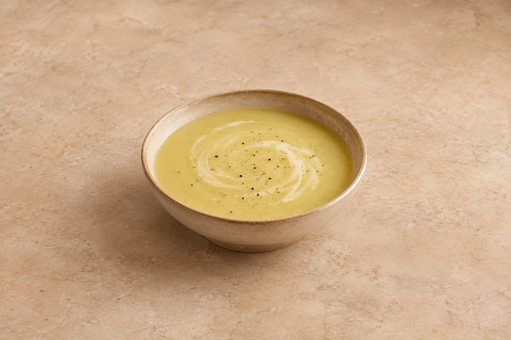

Soups
Leek and Potato Soup
A smooth, creamy leek and potato soup. Opens at 2 servings; adjust the slider up to 6 for the original recipe.
Time to allow: 25 min total
Prep10 mins
Cook15 mins
people
Ingredient quantities update automatically

Ingredients
Method
Soften the vegetables
Heat the oil in a large pan and add the onion, potatoes and leeks. Cook for 3–4 minutes over a medium heat until starting to soften.Simmer
Add the vegetable stock and bring to the boil. Season with salt and freshly ground black pepper. Simmer for 10 minutes until the vegetables are tender.Blend and finish
Remove from the heat and whizz with a hand blender, or carefully blend in batches, until smooth. Reheat in a clean pan and stir in the double cream or crème fraîche. Heat through and serve.
Tips & leftovers
Storage & leftovers
Cool in shallow containers, refrigerate covered within 2 hours and eat within 48 hours. Label the container with the recipe name and the date and time it was made; follow any shorter ingredient use-by or opened-pack instructions.
Freezing
Freezing not recommended once cream or crème fraîche has been added. The cooled soup base without dairy can be frozen for up to 2 months for best quality; defrost in the fridge and use within 24 hours. Reheat once until steaming hot, then add fresh dairy and heat through gently.
Reheating
Reheat once in a saucepan, stirring and adding a splash of water or stock, until steaming hot throughout. Stir in the cream after heating the soup, then heat through gently.
Substitutions
Use double cream or crème fraîche as written; the latter adds tang. Use unsweetened plant cream for a dairy-free variation and check the stock.
Keeping leftovers safe
Keep chilled food at 0–5°C and follow the shortest ingredient use-by or opened-pack instruction. Cool cooked leftovers in small portions and refrigerate within 2 hours. Reheat suitable cooked leftovers only once, until steaming hot throughout; ingredients already reheated in this recipe must not be reheated again. Serve chilled desserts cold. Freezing recommendations and any exceptions for a base prepared without cream or prawns are explained in this recipe’s Freezing note.
Food-safety guidance: Food Standards Agency: chilling and freezing · reheating leftovers.